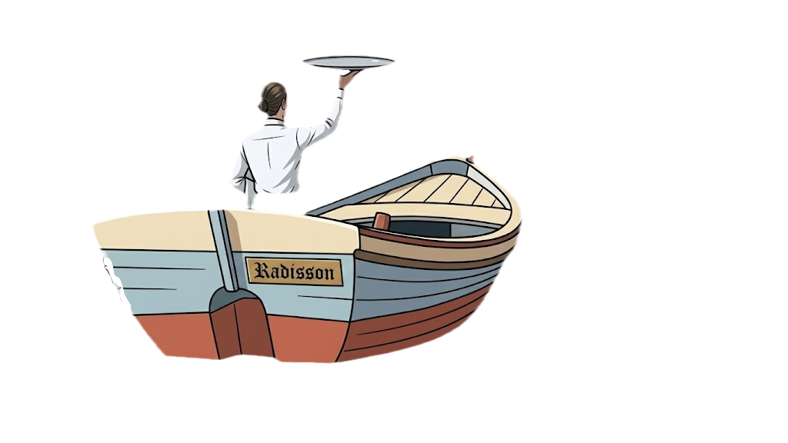

🐘
🌲

of
=
Submit
Clear
~
f
o
r
t
h
o
s
e
w
h
o
f
l
o
u
n
d
e
r
s
t
i
l
l
~
Thank you for your hardwork
⚡
the restaurant
⚡
gods
⚡
⚡
are appeased
⚡
TIP JAR
Submit
Who worked? How many hours?
Name
Hours
Yer Dough
WAIT!
Don't be a Stooge!
Press here to
tip your fellow coworkers!
OR
THE END
Enter Sales
Enter %
TipOut
All Staff Tipped!
🔊 Mute